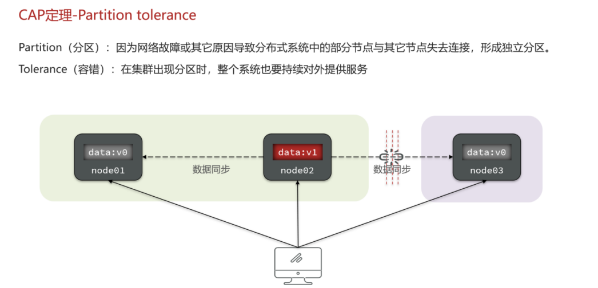

此内容根据文章生成，仅用于文章内容的解释与总结
投诉 微服务下的事务场景 在以下场景中，用户支付成功后，订单服务创建业务，同时使用 restTemplate 或者 feign 对其他服务发起远程调用，完成整个业务流程。
照理来说所有业务要么都成功，要么都失败，在没有加上事务管理时，是否能保证事务一致性？
实际上不会。假设在第三个库存服务中，商品库存不够了，那么后端确实会给前端报错信息（报500状态码），但是在前面两个服务不会同时失败。也就是说，订单确实创建了，钱也确实少了，但是给不了货儿，明白了吧？此时事务就不是一致的。
在分布式系统中，一个业务跨越了多个服务或数据源，每个事务都是一个分支事务，而整个事务称为全局事务。 保证所有分支事务的最终一致性，这样的事务就是分布式事务。
那么，如何保证分布式事务？先从基本的理论开始~
理论基础 CAP定理 四张图介绍CAP定理。

Base理论 在CAP中，P是一定会发生的。想想看，网络故障，或者仅仅是普通的网络波动等其他原因，都有可能会导致集群中的节点不可用。因此满足P的前提下，能产生的模式也就只有两个了，那就是CP模式和AP模式。
无论是AP模式还是CP模式，他俩都在一开始我们提出分布式事务中遇到问题的解决方案，那就是如何实现服务之间的通信。
只有服务之间能够互相感知，才能保证整个分布式事务最终一致性。因此，接下来要讲的 Seata ，就起到了很大的作用。
Seata Seata简介 先从seata的架构开始。
seata的架构是分布式事务的基本模型，但并不是最终的解决方案。根据系统要实现的是强一致还是最终一致，又衍生出了几套解决方案。
部署Seata的tc-server 在seata的架构中，TM和RM可以说是全局事务和分支事务的代理，而TC是独立于分布式系统的一个服务，需要额外进行搭建。
1.下载 首先我们要下载seata-server包，地址在http ://seata.io/zh-cn/blog/download . html
2.解压 在非中文目录解压缩这个zip包，其目录结构如下：
3.修改配置 因为TC需要与RM\TM之间建立联系，TC在集群中又是一个服务，所以需要将TC注册到Nacos等服务注册中心。 在配置文件中有提供多个注册中心，如果也是用nacos，删掉保留我写的内容就可以了。
修改conf目录下的registry.conf文件：
内容如下：
1 2 3 4 5 6 7 8 9 10 11 12 13 14 15 16 17 18 19 20 21 22 23 24 25 26 27 28 29 registry { type = "nacos" nacos { application = "seata-tc-server" #当前服务的名称 serverAddr = "127.0.0.1:8848" group = "DEFAULT_GROUP" namespace = "" cluster = "SH" username = "nacos" password = "nacos" } } config { type = "nacos" nacos { serverAddr = "127.0.0.1:8848" namespace = "" group = "SEATA_GROUP" username = "nacos" password = "nacos" dataId = "seataServer.properties" } }
4.在nacos添加配置 特别注意，为了让tc服务的集群可以共享配置，我们选择了nacos作为统一配置中心。因此服务端配置文件seataServer.properties文件需要在nacos中配好。
格式如下：
配置内容如下：
1 2 3 4 5 6 7 8 9 10 11 12 13 14 15 16 17 18 19 20 21 22 23 24 25 26 27 28 29 30 31 32 33 34 store.mode =db store.db.datasource =druid store.db.dbType =mysql store.db.driverClassName =com.mysql.jdbc.Driver store.db.url =jdbc:mysql://127.0.0.1:3306/seata?useUnicode=true&rewriteBatchedStatements=true store.db.user =root store.db.password =123 store.db.minConn =5 store.db.maxConn =30 store.db.globalTable =global_table store.db.branchTable =branch_table store.db.queryLimit =100 store.db.lockTable =lock_table store.db.maxWait =5000 server.recovery.committingRetryPeriod =1000 server.recovery.asynCommittingRetryPeriod =1000 server.recovery.rollbackingRetryPeriod =1000 server.recovery.timeoutRetryPeriod =1000 server.maxCommitRetryTimeout =-1 server.maxRollbackRetryTimeout =-1 server.rollbackRetryTimeoutUnlockEnable =false server.undo.logSaveDays =7 server.undo.logDeletePeriod =86400000 transport.serialization =seata transport.compressor =none metrics.enabled =false metrics.registryType =compact metrics.exporterList =prometheus metrics.exporterPrometheusPort =9898
其中的数据库地址、用户名、密码都需要修改成你自己的数据库信息。
5.创建数据库表 特别注意：tc服务在管理分布式事务时，需要记录事务相关数据到数据库中，你需要提前创建好这些表。
新建一个名为seata的数据库，运行提供的sql文件，这些表主要记录全局事务、分支事务、全局锁信息：
1 2 3 4 5 6 7 8 9 10 11 12 13 14 15 16 17 18 19 20 21 22 23 24 25 26 27 28 29 30 31 32 33 34 35 36 37 38 39 40 41 42 43 44 45 SET NAMES utf8mb4; SET FOREIGN_KEY_CHECKS = 0; -- ---------------------------- -- 分支事务表 -- ---------------------------- DROP TABLE IF EXISTS `branch_table`; CREATE TABLE `branch_table` ( `branch_id` bigint(20) NOT NULL, `xid` varchar(128) CHARACTER SET utf8 COLLATE utf8_general_ci NOT NULL, `transaction_id` bigint(20) NULL DEFAULT NULL, `resource_group_id` varchar(32) CHARACTER SET utf8 COLLATE utf8_general_ci NULL DEFAULT NULL, `resource_id` varchar(256) CHARACTER SET utf8 COLLATE utf8_general_ci NULL DEFAULT NULL, `branch_type` varchar(8) CHARACTER SET utf8 COLLATE utf8_general_ci NULL DEFAULT NULL, `status` tinyint(4) NULL DEFAULT NULL, `client_id` varchar(64) CHARACTER SET utf8 COLLATE utf8_general_ci NULL DEFAULT NULL, `application_data` varchar(2000) CHARACTER SET utf8 COLLATE utf8_general_ci NULL DEFAULT NULL, `gmt_create` datetime(6) NULL DEFAULT NULL, `gmt_modified` datetime(6) NULL DEFAULT NULL, PRIMARY KEY (`branch_id`) USING BTREE, INDEX `idx_xid`(`xid`) USING BTREE ) ENGINE = InnoDB CHARACTER SET = utf8 COLLATE = utf8_general_ci ROW_FORMAT = Compact; -- ---------------------------- -- 全局事务表 -- ---------------------------- DROP TABLE IF EXISTS `global_table`; CREATE TABLE `global_table` ( `xid` varchar(128) CHARACTER SET utf8 COLLATE utf8_general_ci NOT NULL, `transaction_id` bigint(20) NULL DEFAULT NULL, `status` tinyint(4) NOT NULL, `application_id` varchar(32) CHARACTER SET utf8 COLLATE utf8_general_ci NULL DEFAULT NULL, `transaction_service_group` varchar(32) CHARACTER SET utf8 COLLATE utf8_general_ci NULL DEFAULT NULL, `transaction_name` varchar(128) CHARACTER SET utf8 COLLATE utf8_general_ci NULL DEFAULT NULL, `timeout` int(11) NULL DEFAULT NULL, `begin_time` bigint(20) NULL DEFAULT NULL, `application_data` varchar(2000) CHARACTER SET utf8 COLLATE utf8_general_ci NULL DEFAULT NULL, `gmt_create` datetime NULL DEFAULT NULL, `gmt_modified` datetime NULL DEFAULT NULL, PRIMARY KEY (`xid`) USING BTREE, INDEX `idx_gmt_modified_status`(`gmt_modified`, `status`) USING BTREE, INDEX `idx_transaction_id`(`transaction_id`) USING BTREE ) ENGINE = InnoDB CHARACTER SET = utf8 COLLATE = utf8_general_ci ROW_FORMAT = Compact; SET FOREIGN_KEY_CHECKS = 1;
6.启动TC服务 进入bin目录，运行其中的seata-server.bat即可：
启动成功后，seata-server应该已经注册到nacos注册中心了。
打开浏览器，访问nacos地址：http://localhost:8848，然后进入服务列表页面，可以看到seata-tc-server的信息，端口默认占的8091：
微服务集成Seata 1.微服务引入依赖 首先，我们需要在微服务中引入seata依赖：
1 2 3 4 5 6 7 8 9 10 11 12 13 14 15 16 17 <dependency > <groupId > com.alibaba.cloud</groupId > <artifactId > spring-cloud-starter-alibaba-seata</artifactId > <exclusions > <exclusion > <artifactId > seata-spring-boot-starter</artifactId > <groupId > io.seata</groupId > </exclusion > </exclusions > </dependency > <dependency > <groupId > io.seata</groupId > <artifactId > seata-spring-boot-starter</artifactId > <version > ${seata.version}</version > </dependency >
2.微服务添加配置文件 需要修改application.yml文件，添加一些配置：可以看到，seata不是springcloud配置下的内容，而是单独的一个配置模块，因为两者没有集成。
1 2 3 4 5 6 7 8 9 10 11 12 13 14 15 seata: registry: type: nacos nacos: server-addr: 127.0 .0 .1 :8848 namespace: "" group: DEFAULT_GROUP application: seata-tc-server cluster: SH tx-service-group: seata-demo service: vgroup-mapping: seata-demo: SH
cluster集群在此处修改为 tx-service-group 。例如在前边提到的订单服务、支付服务、仓储服务，整个事务的流程应该为一个组。而 vgroup-mapping中使用事务组名称映射集群，至此nacos需要的信息都具备了。
参与这个事务的每个微服务都需要做这个配置。
参与这个事务的每个微服务都需要做这个配置。
参与这个事务的每个微服务都需要做这个配置。
参与这个事务的每个微服务都需要做这个配置。
Seata分布式事务处理方案 XA模式：强一致性模式 介绍&优缺点 XA 规范 是 X/Open 组织定义的分布式事务处理（DTP，Distributed Transaction Processing）标准，XA 规范 描述了全局的TM与局部的RM之间的接口，几乎所有主流的数据库都对 XA 规范 提供了支持。
XA模式的优点是什么？
事务的强一致性，满足ACID原则。
常用数据库都支持，实现简单，并且没有代码侵入
XA模式的缺点是什么？
因为一阶段需要锁定数据库资源（占用DB锁），等待二阶段结束才释放，性能较差
依赖关系型数据库实现事务
要求数据库支持XA模式，关系型数据库例如mysql是支持的，redis就不支持。
两阶段提交（2pc协议） XA是规范，目前主流数据库都实现了这种规范，实现的原理都是基于两阶段提交。
正常情况：
异常情况：
一阶段：
事务协调者通知每个事物参与者执行本地事务
本地事务执行完成后报告事务执行状态给事务协调者，此时事务不提交，继续持有数据库锁
二阶段：
事务协调者基于一阶段的报告来判断下一步操作
如果一阶段都成功，则通知所有事务参与者，提交事务
如果一阶段任意一个参与者失败，则通知所有事务参与者回滚事务
Seata的XA模型 Seata对原始的XA模式做了简单的封装和改造，以适应自己的事务模型，基本架构如图：
RM一阶段的工作：
① 注册分支事务到TC
② 执行分支业务sql但不提交
③ 报告执行状态到TC
TC二阶段的工作：
TC检测各分支事务执行状态
a.如果都成功，通知所有RM提交事务
b.如果有失败，通知所有RM回滚事务
RM二阶段的工作：
springcloud实现XA模式 Seata的starter已经完成了XA模式的自动装配，实现非常简单，步骤如下：
1）修改application.yml文件（每个参与事务的微服务） ，开启XA模式：
1 2 seata: data-source-proxy-mode: XA
2）给发起全局事务的入口方法添加@GlobalTransactional注解:
本例中是OrderServiceImpl中的create方法.
3）重启服务并测试
重启order-service，再次测试，发现无论怎样，三个微服务都能成功回滚。
AT模式：最终一致模式 AT模式同样是分阶段提交的事务模型，不过缺弥补了XA模型中资源锁定周期过长的缺陷。
Seata的AT模型 基本流程图：
阶段一RM的工作：
注册分支事务
记录undo-log（数据快照）
执行业务sql并提交
报告事务状态
阶段二提交时RM的工作：
阶段二回滚时RM的工作：
流程梳理 我们用一个真实的业务来梳理下AT模式的原理。
比如，现在又一个数据库表，记录用户余额：
其中一个分支业务要执行的SQL为：
1 update tb_account set money = money - 10 where id = 1
AT模式下，当前分支事务执行流程如下：
一阶段：
1）TM发起并注册全局事务到TC
2）TM调用分支事务
3）分支事务准备执行业务SQL
4）RM拦截业务SQL，根据where条件查询原始数据，形成快照。
1 2 3 { "id" : 1 , "money" : 100 }
5）RM执行业务SQL，提交本地事务，释放数据库锁。此时 money = 90
6）RM报告本地事务状态给TC
二阶段：
1）TM通知TC事务结束
2）TC检查分支事务状态
a）如果都成功，则立即删除快照
b）如果有分支事务失败，需要回滚。读取快照数据（{"id": 1, "money": 100}），将快照恢复到数据库。此时数据库再次恢复为100
流程图：
AT与XA的区别 简述AT模式与XA模式最大的区别是什么？
XA模式一阶段不提交事务，锁定资源；AT模式一阶段直接提交，不锁定资源。
XA模式依赖数据库机制实现回滚；AT模式利用数据快照实现数据回滚。
XA模式强一致；AT模式最终一致
脏写问题（由于一阶段提交事务会释放DB锁） 在多线程并发访问AT模式的分布式事务时，有可能出现脏写问题，如图：
解决思路就是引入了全局锁的概念。
全局锁是事务针对一个表中要操作的行数据，对这个行数据加上锁。
在释放DB锁之前，先拿到全局锁。避免同一时刻有另外一个事务来操作当前数据。
数据库锁的话，任何其他事务都进不来，但是全局锁，只锁定操作账户余额的相关事务（seata管理），其他事物（非seata管理的事务）仍可以进来，例如修改账户名称。
乐观锁改善非seata的事务2 上面的解决方案是基于事务2是交给了TC管理的，但是如果事务2没有给seata管理，可以采用乐观锁解决。
什么情况下事务2不会是 TC 管理的？
没有被@GlobalTransactional注解包含在整个seata的事务调用被seata管理的事务。
如何用乐观锁改善？
线程1将金额为100的数据修改为90，此时业务不提交，此时线程2将90修改为80，但是线程1业务报错需要回滚，此时线程1将金额恢复为100。
我们可以这样设计乐观锁的实现：
定义乐观锁字段 ：在数据库中，给涉及到并发修改的数据表添加一个版本号（version）字段。每次读取数据时，同时读取这个版本号。读取数据时获取版本号 ：线程1和线程2在读取金额时，同时读取到当前金额（例如初始是100）和版本号（假设为1）。更新数据时检查版本号 ：
线程1将金额从100修改为90，同时提交版本号从1更新为2。但在实际提交到数据库之前，线程1的业务逻辑发生错误，需要回滚。
在线程1回滚的过程中，它会恢复金额到100，并且假设这个版本号不变（因为实际操作中版本号应该在每次修改时递增，但在这里为了简化，我们假设线程1由于错误并未成功递增版本号）。
线程2接着将金额从90（或线程1回滚后的100，具体取决于线程1的操作在数据库中的实际体现）修改为80，同时它会将版本号从1更新为2（假设线程1的更新并未成功改变版本号）。
乐观锁的实现 ：
当线程1尝试回滚并将金额从90恢复为100并尝试将版本号设置回1时，乐观锁会介入。因为此时数据库中的版本号已经是2了，线程1的更新会因为版本号不匹配而失败。这样，线程1就无法覆盖线程2的更新。
正确的做法应该是线程1检测到版本号不匹配后，可以选择重新读取最新数据并决定是否继续执行操作，或者记录一个错误日志等。
解决策略 ：
如果线程1的操作需要严格基于修改前的数据，那么它应该重新读取最新的数据（此时金额为80，版本号为2），并决定是否继续或重试。
在某些情况下，也可以让线程1在版本号不匹配时简单地放弃修改，记录一个错误或异常，然后退出。
实现AT模式 AT模式中的快照生成、回滚等动作都是由框架自动完成，没有任何代码侵入，因此实现非常简单。
只不过，AT模式需要一个表来记录全局锁、另一张表来记录数据快照undo_log。
1）导入数据库表，记录全局锁
导入Sql文件：seata-at.sql，其中lock_table导入到TC服务关联的数据库，undo_log表导入到微服务关联的数据库：
1 2 3 4 5 6 7 8 9 10 11 12 13 14 15 16 17 18 19 20 21 22 23 24 25 26 27 28 29 30 31 32 33 34 35 36 37 38 39 40 41 42 43 44 45 46 47 48 49 50 51 52 53 54 55 56 57 58 59 60 SET NAMES utf8mb4;SET FOREIGN_KEY_CHECKS = 0 ;DROP TABLE IF EXISTS `undo_log`;CREATE TABLE `undo_log` ( `branch_id` bigint (20 ) NOT NULL COMMENT 'branch transaction id' , `xid` varchar (100 ) CHARACTER SET utf8 COLLATE utf8_general_ci NOT NULL COMMENT 'global transaction id' , `context` varchar (128 ) CHARACTER SET utf8 COLLATE utf8_general_ci NOT NULL COMMENT 'undo_log context,such as serialization' , `rollback_info` longblob NOT NULL COMMENT 'rollback info' , `log_status` int (11 ) NOT NULL COMMENT '0:normal status,1:defense status' , `log_created` datetime(6 ) NOT NULL COMMENT 'create datetime' , `log_modified` datetime(6 ) NOT NULL COMMENT 'modify datetime' , UNIQUE INDEX `ux_undo_log`(`xid`, `branch_id`) USING BTREE ) ENGINE = InnoDB CHARACTER SET = utf8 COLLATE = utf8_general_ci COMMENT = 'AT transaction mode undo table' ROW_FORMAT = Compact; DROP TABLE IF EXISTS `lock_table`;CREATE TABLE `lock_table` ( `row_key` varchar (128 ) CHARACTER SET utf8 COLLATE utf8_general_ci NOT NULL , `xid` varchar (96 ) CHARACTER SET utf8 COLLATE utf8_general_ci NULL DEFAULT NULL , `transaction_id` bigint (20 ) NULL DEFAULT NULL , `branch_id` bigint (20 ) NOT NULL , `resource_id` varchar (256 ) CHARACTER SET utf8 COLLATE utf8_general_ci NULL DEFAULT NULL , `table_name` varchar (32 ) CHARACTER SET utf8 COLLATE utf8_general_ci NULL DEFAULT NULL , `pk` varchar (36 ) CHARACTER SET utf8 COLLATE utf8_general_ci NULL DEFAULT NULL , `gmt_create` datetime NULL DEFAULT NULL , `gmt_modified` datetime NULL DEFAULT NULL , PRIMARY KEY (`row_key`) USING BTREE, INDEX `idx_branch_id`(`branch_id`) USING BTREE ) ENGINE = InnoDB CHARACTER SET = utf8 COLLATE = utf8_general_ci ROW_FORMAT = Compact; SET FOREIGN_KEY_CHECKS = 1 ;
2）给发起全局事务的入口方法添加@GlobalTransactional注解（见XA模式），修改application.yml文件，将事务模式修改为AT模式即可：
1 2 seata: data-source-proxy-mode: AT
3）重启服务并测试
优缺点 AT模式的优点：
一阶段完成直接提交事务，释放数据库资源，性能比较好
利用全局锁实现读写隔离
没有代码侵入，框架自动完成回滚和提交
AT模式的缺点：
两阶段之间属于软状态，属于最终一致
框架的快照功能会影响性能，但比XA模式要好很多
TCC模式 TCC模式与AT模式非常相似，每阶段都是独立事务，不同的是TCC通过人工编码来实现数据恢复。需要实现三个方法：
流程分析 举例，一个扣减用户余额的业务。假设账户A原来余额是100，需要余额扣减30元。
阶段一（ Try ） ：检查余额是否充足，如果充足则冻结金额增加30元，可用余额扣除30
初识余额：
余额充足，可以冻结：
此时，总金额 = 冻结金额 + 可用金额，数量依然是100不变。事务直接提交无需等待其它事务。
**阶段二（Confirm)**：假如要提交（Confirm），则冻结金额扣减30
确认可以提交，不过之前可用金额已经扣减过了，这里只要清除冻结金额就好了：
此时，总金额 = 冻结金额 + 可用金额 = 0 + 70 = 70元
**阶段二(Canncel)**：如果要回滚（Cancel），则冻结金额扣减30，可用余额增加30
需要回滚，那么就要释放冻结金额，恢复可用金额：
Seata的TCC模型 Seata中的TCC模型依然延续之前的事务架构，如图：
优缺点 TCC模式的每个阶段是做什么的？
Try：资源检查和预留
Confirm：业务执行和提交
Cancel：预留资源的释放
TCC的优点是什么？
一阶段完成直接提交事务，释放数据库资源，性能好
相比AT模型，无需生成快照，无需使用全局锁，性能最强
不依赖数据库事务，而是依赖补偿操作，可以用于非事务型数据库
TCC的缺点是什么？
有代码侵入，需要人为编写try、Confirm和Cancel接口，太麻烦
软状态，事务是最终一致
需要考虑Confirm和Cancel的失败情况，做好幂等处理
事务悬挂和空回滚 1）空回滚 当某分支事务的try阶段阻塞 时，可能导致全局事务超时而触发二阶段的cancel操作。在未执行try操作时先执行了cancel操作，这时cancel不能做回滚，就是空回滚 。
如图：
执行cancel操作时，应当判断try是否已经执行，如果尚未执行，则应该空回滚。
2）业务悬挂 对于已经空回滚的业务，之前被阻塞的try操作恢复，继续执行try，就永远不可能confirm或cancel ，事务一直处于中间状态，这就是业务悬挂 。
执行try操作时，应当判断cancel是否已经执行过了，如果已经执行，应当阻止空回滚后的try操作，避免悬挂
实现TCC模式 解决空回滚和业务悬挂问题，必须要记录当前事务状态，是在try、还是cancel？
1）思路分析 这里我们定义一张表：
1 2 3 4 5 6 7 8 CREATE TABLE `account_freeze_tbl` ( `xid` varchar (128 ) NOT NULL , `user_id` varchar (255 ) DEFAULT NULL COMMENT '用户id' , `freeze_money` int (11 ) unsigned DEFAULT '0' COMMENT '冻结金额' , `state` int (1 ) DEFAULT NULL COMMENT '事务状态，0:try，1:confirm，2:cancel' , PRIMARY KEY (`xid`) USING BTREE ) ENGINE= InnoDB DEFAULT CHARSET= utf8 ROW_FORMAT= COMPACT;
其中：
xid：是全局事务id
freeze_money：用来记录用户冻结金额
state：用来记录事务状态
那此时，我们的业务开怎么做呢？
Try业务：
记录冻结金额和事务状态到account_freeze表
扣减account表可用金额
Confirm业务
根据xid删除account_freeze表的冻结记录
Cancel业务
修改account_freeze表，冻结金额为0，state为2
修改account表，恢复可用金额
如何判断是否空回滚？
cancel业务中，根据xid查询account_freeze，如果为null则说明try还没做，需要空回滚
如何避免业务悬挂？
try业务中，根据xid查询account_freeze ，如果已经存在则证明Cancel已经执行，拒绝执行try业务
接下来，我们改造account-service，利用TCC实现余额扣减功能。
2）声明TCC接口 TCC的Try、Confirm、Cancel方法都需要在接口中基于注解来声明，
我们在account-service项目中的cn.itcast.account.service包中新建一个接口，声明TCC三个接口：
1 2 3 4 5 6 7 8 9 10 11 12 13 14 15 16 17 18 package cn.itcast.account.service;import io.seata.rm.tcc.api.BusinessActionContext;import io.seata.rm.tcc.api.BusinessActionContextParameter;import io.seata.rm.tcc.api.LocalTCC;import io.seata.rm.tcc.api.TwoPhaseBusinessAction;@LocalTCC public interface AccountTCCService { @TwoPhaseBusinessAction(name = "deduct", commitMethod = "confirm", rollbackMethod = "cancel") void deduct (@BusinessActionContextParameter(paramName = "userId") String userId, @BusinessActionContextParameter(paramName = "money") int money) ; boolean confirm (BusinessActionContext ctx) ; boolean cancel (BusinessActionContext ctx) ; }
3）编写实现类 在account-service服务中的cn.itcast.account.service.impl包下新建一个类，实现TCC业务：
1 2 3 4 5 6 7 8 9 10 11 12 13 14 15 16 17 18 19 20 21 22 23 24 25 26 27 28 29 30 31 32 33 34 35 36 37 38 39 40 41 42 43 44 45 46 47 48 49 50 51 52 53 54 55 56 57 58 59 60 61 62 package cn.itcast.account.service.impl;import cn.itcast.account.entity.AccountFreeze;import cn.itcast.account.mapper.AccountFreezeMapper;import cn.itcast.account.mapper.AccountMapper;import cn.itcast.account.service.AccountTCCService;import io.seata.core.context.RootContext;import io.seata.rm.tcc.api.BusinessActionContext;import lombok.extern.slf4j.Slf4j;import org.springframework.beans.factory.annotation.Autowired;import org.springframework.stereotype.Service;import org.springframework.transaction.annotation.Transactional;@Service @Slf4j public class AccountTCCServiceImpl implements AccountTCCService { @Autowired private AccountMapper accountMapper; @Autowired private AccountFreezeMapper freezeMapper; @Override @Transactional public void deduct (String userId, int money) { String xid = RootContext.getXID(); accountMapper.deduct(userId, money); AccountFreeze freeze = new AccountFreeze (); freeze.setUserId(userId); freeze.setFreezeMoney(money); freeze.setState(AccountFreeze.State.TRY); freeze.setXid(xid); freezeMapper.insert(freeze); } @Override public boolean confirm (BusinessActionContext ctx) { String xid = ctx.getXid(); int count = freezeMapper.deleteById(xid); return count == 1 ; } @Override public boolean cancel (BusinessActionContext ctx) { String xid = ctx.getXid(); AccountFreeze freeze = freezeMapper.selectById(xid); accountMapper.refund(freeze.getUserId(), freeze.getFreezeMoney()); freeze.setFreezeMoney(0 ); freeze.setState(AccountFreeze.State.CANCEL); int count = freezeMapper.updateById(freeze); return count == 1 ; } }
SAGA模式 Saga 模式是 Seata 即将开源的长事务解决方案，将由蚂蚁金服主要贡献。
其理论基础是Hector & Kenneth 在1987年发表的论文Sagas 。
Seata官网对于Saga的指南：https://seata.io/zh-cn/docs/user/saga.html
原理 在 Saga 模式下，分布式事务内有多个参与者，每一个参与者都是一个冲正补偿服务，需要用户根据业务场景实现其正向操作和逆向回滚操作。
分布式事务执行过程中，依次执行各参与者的正向操作，如果所有正向操作均执行成功，那么分布式事务提交。如果任何一个正向操作执行失败，那么分布式事务会去退回去执行前面各参与者的逆向回滚操作，回滚已提交的参与者，使分布式事务回到初始状态。
Saga也分为两个阶段：
一阶段：直接提交本地事务
二阶段：成功则什么都不做；失败则通过编写补偿业务来回滚
优缺点 优点：
事务参与者可以基于事件驱动实现异步调用，吞吐高
一阶段直接提交事务，无锁，性能好
不用编写TCC中的三个阶段，实现简单
缺点：
软状态持续时间不确定，时效性差
没有锁，没有事务隔离，会有脏写
四种模式对比 我们从以下几个方面来对比四种实现：
一致性：能否保证事务的一致性？强一致还是最终一致？
隔离性：事务之间的隔离性如何？
代码侵入：是否需要对业务代码改造？
性能：有无性能损耗？
场景：常见的业务场景
如图：